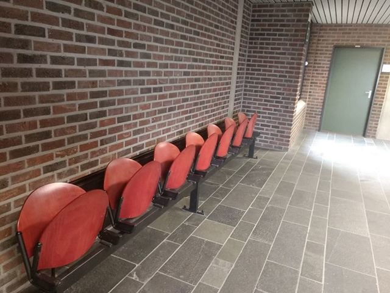

Tips & tricks
Ik koos deze foto omdat ik vind dat dit het meest herkenbare deel van de f blok is.
Tips:
- Als je geen eten van thuis bij hebt is er een ruime keuze aan eten in het cafetaria
- Maak uw taken op tijd, dit bespaard je later veel werk
- leer je R nummer van buiten, je gaat hem vaker nodig hebben dan je denkt